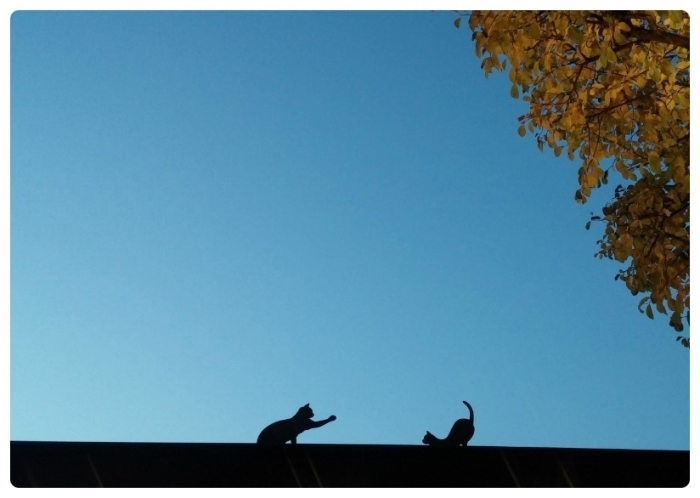
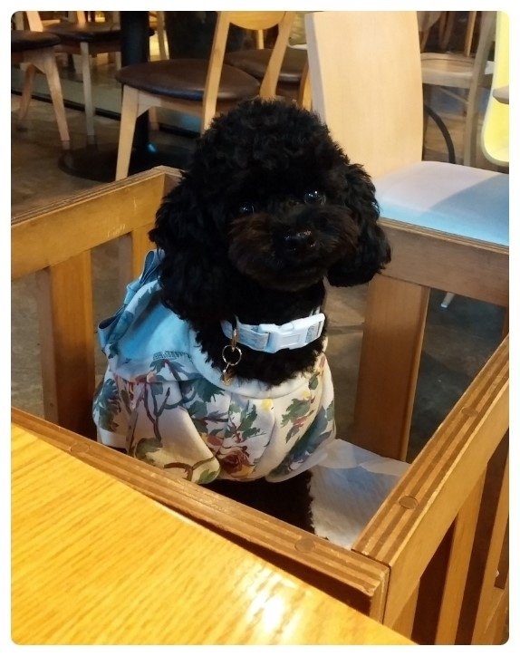
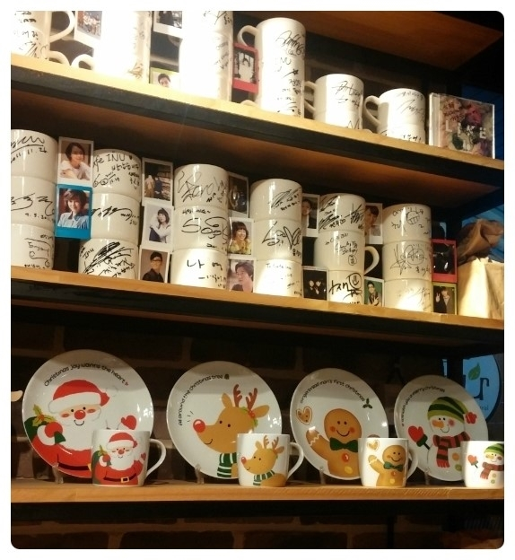
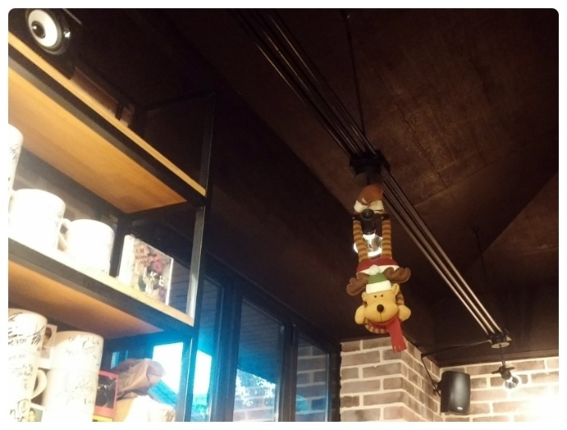
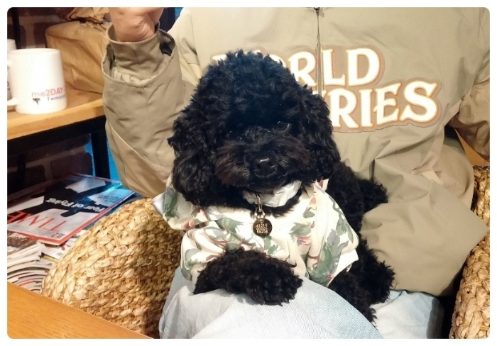
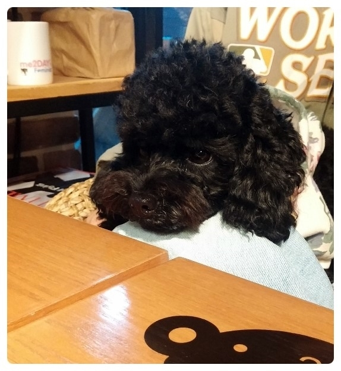
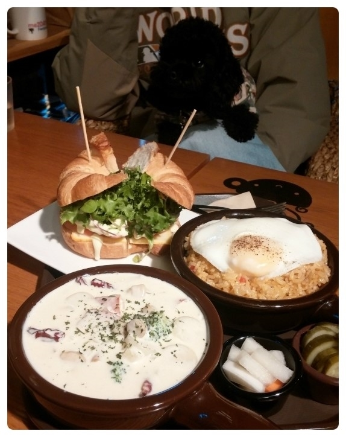
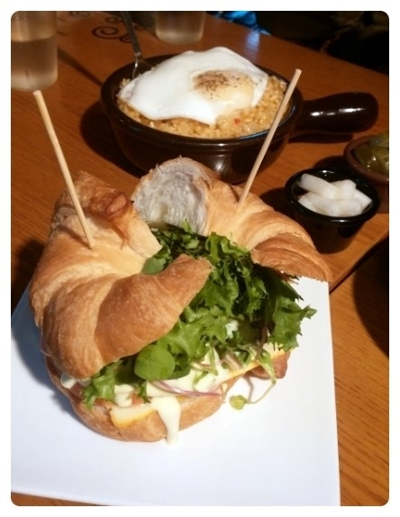
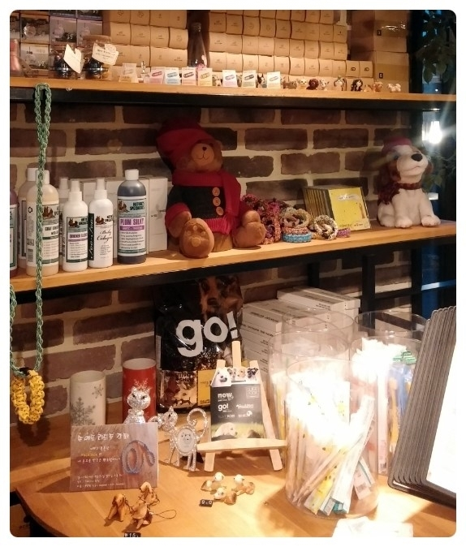
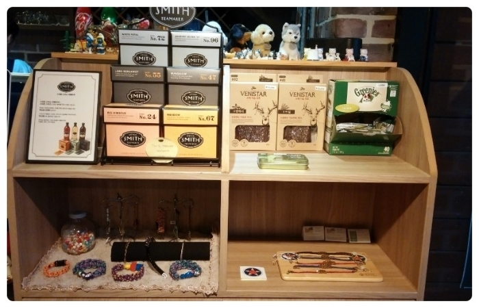

애견동반 카페 이누 - CAFE INU


카페이누는 애견동반 카페 입니다
애견카페는 아니라서 강아지를 바닥에 내려 놓을 수는 없어요..
강아지와 함께 수다 떨고 싶을때 좋아요~
따꾸가 앉은 사각형의 애견전용체어를 이용하거나..
품에 안고 있어야 해서.. 대부분은 소형견들이 오는편이에요~


크리스마스 소품들로 꾸며져있어요~


따꾸는 주로 품에 있거나.. 졸거나.. 테이블에 턱을 고이고 있습니다 ㅋㅋ

음료만 간단히 먹기도 하고.. 식사를 같이 하기도 하는데..
주로 먹는 메뉴라 갈때마다 동일해요 ㅎㅎ

매콤 까르보나라 떡볶이 10,000
그밥 8,500
쁘띠프랑스 샌드위치 5,000
건강한 재료로 담백하게 만들어진 음식이에요 !


애견용품도 계속 업그레이드 되고 있는 것 같습니다
사회성이 없어서 애견카페를 못가는 경우..
추운날씨 실내에서 만날 수 있는 곳으로 추천해요~
|